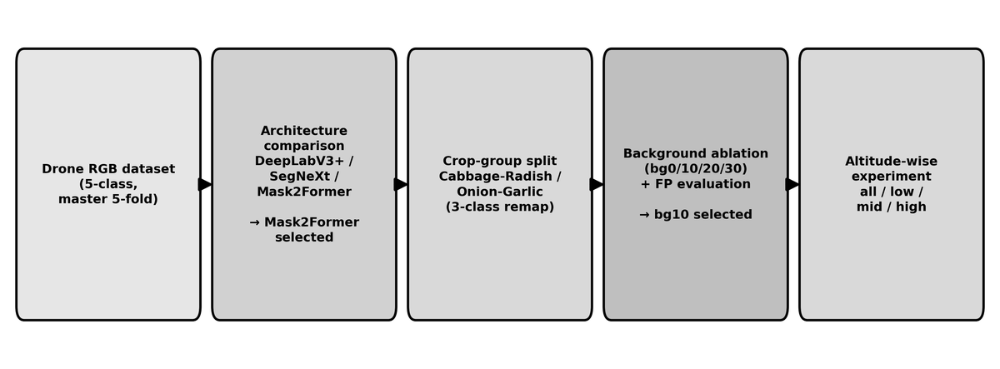
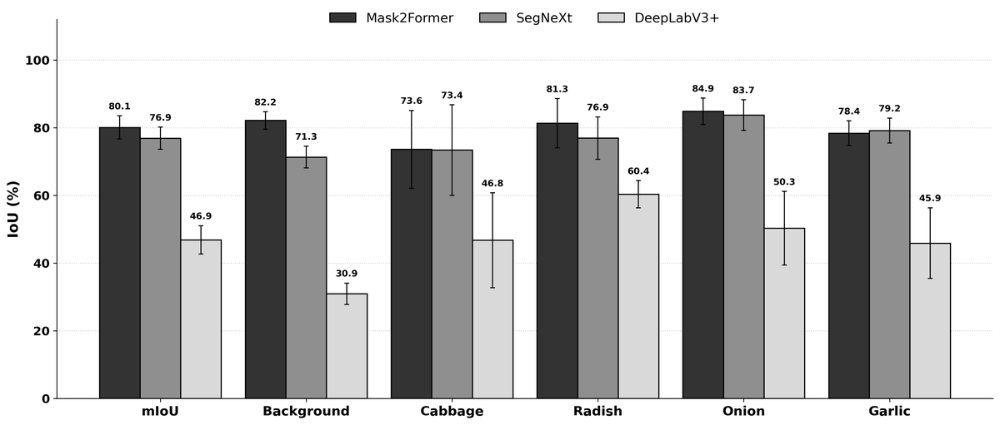
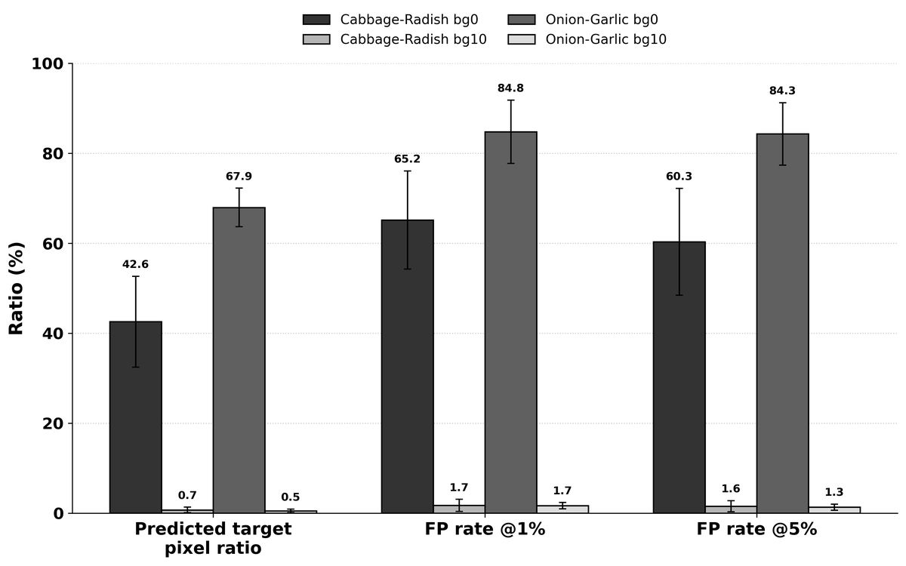
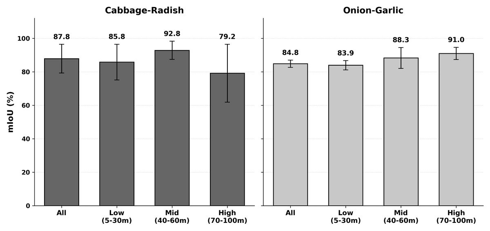

국내 밭농업은 소규모 필지에 여러 작물이 혼재됨. 공익직불제 이행점검 자동화를 위해 드론 RGB 영상에서 배추·무·양파·마늘 4종을 픽셀 단위로 구분해야 함. 배추·무는 넓은 잎, 양파·마늘은 가늘고 선형적인 지상부로 각 작물군 내 형태가 유사함. 이 유사성을 반영해 배추·무 / 양파·마늘 두 개의 3-class 분리 모델을 구성하고, 통합 5-class 모델을 기준으로 삼음.

국립농산물품질관리원 협력 사업으로 2022–2024년 전국 주요 산지(강릉·평창·무안·창녕·의성·제주 등)에서 DJI Mavic 2 Zoom으로 직접 촬영·구축. 촬영 고도 5–100m를 저고도(5–30m)·중고도(40–60m)·고고도(70–100m)로 구분함. 총 12,380장(배추·무 2,510 / 양파·마늘 9,870). 이미지 단위 master 5-fold split을 만들어 모든 모델이 동일 split을 사용하도록 고정함.
통합 5-class 데이터에서 DeepLabV3+, SegNeXt, Mask2Former를 동일 조건 5-fold 교차검증으로 비교. Mask2Former가 mIoU 80.08%로 가장 높고 클래스 간 성능도 균형적이어서 기본 모델로 선정함(SegNeXt 76.91%, DeepLabV3+ 46.85%).

SegNeXt(76.9) > DeepLabV3+(46.9). 클래스별(배경·배추·무·양파·마늘)로도 Mask2Former가 균형적">통합 5-class 대비 작물군 분리 3-class 모델에서 네 작물 모두 IoU가 향상됨. 배추 +12.28pp(73.62→85.90), 무 +9.42pp(81.35→90.77), 양파 +3.37pp(84.87→88.24), 마늘 +4.79pp(78.41→83.20). 형태가 유사한 두 작물과 배경으로 학습 범위를 좁히니 각 작물의 형태·경계 특징을 더 집중적으로 학습함.
작물군 분리 모델은 target 작물이 없는 인근 필지·비대상 작물군 장면을 target으로 오탐할 위험이 큼. 대상 유무 자체를 판정해야 하는 직불제 점검에서는 치명적. 이를 막기 위해 비대상 작물군 background-only 이미지를 target 대비 10% 추가하는 전략을 제안함. 추가 전(bg0%)에는 비대상 장면 전체 픽셀 중 평균 42.6–67.9%를 target으로 오탐했으나, 10%만 추가(bg10%)해도 0.5–0.7%로 급감함(오탐 이미지 비율 FP@1% 65.2·84.8% → 1.7%). target이 포함된 영상의 성능 손실은 거의 없어, 최소한으로 충분한 10%를 최종 설정으로 채택함.

촬영 고도의 영향은 단일 최적값으로 수렴하지 않고 작물군 형태에 따라 상반되게 나타남. 넓은 잎의 배추·무는 중고도에서 최고(mIoU 92.83%), 가늘고 선형적인 양파·마늘은 고도가 높아질수록 상승해 고고도에서 최고(mIoU 90.97%). 따라서 "저고도가 항상 유리하다"가 아니라, 작물군에 따라 촬영 고도 가이드라인을 차등 적용하는 것이 바람직함.

작물군 분리 구성, 비대상 작물군 오탐 억제, 작물군별 고도 민감도를 함께 고려한 드론 밭작물 분할의 현장 운용 전략을 제시함. 특히 소량(10%)의 background-only 이미지만으로 오탐을 두 자릿수 pp에서 1% 내외로 낮춘 점이 핵심 기여. 원본 영상·라벨은 국립농산물품질관리원 소유라 비공개이며, 코드와 데이터 전처리 파이프라인은 GitHub에 공개함.